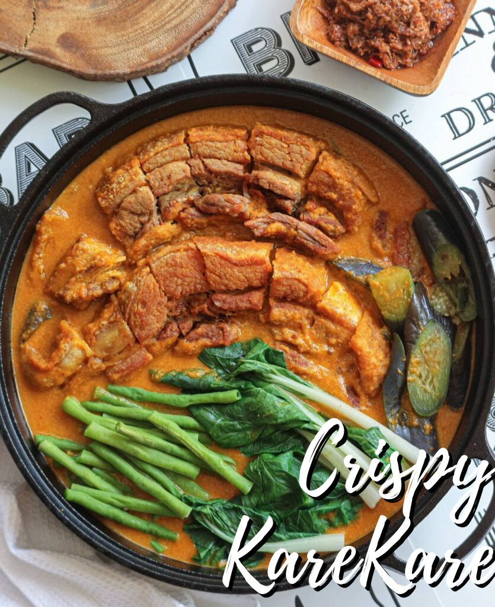
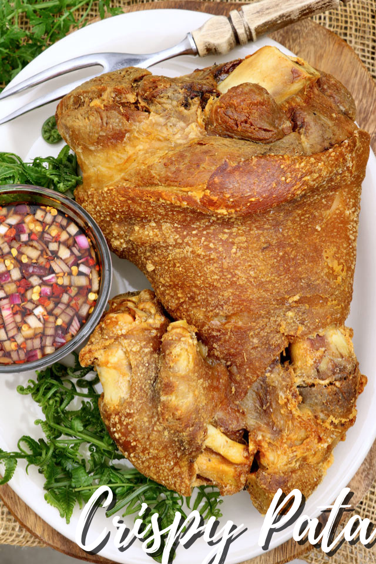
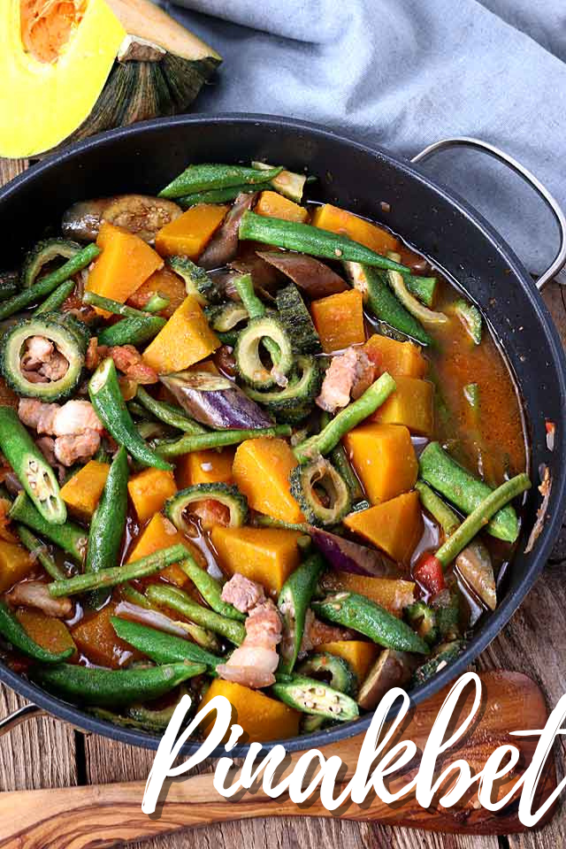
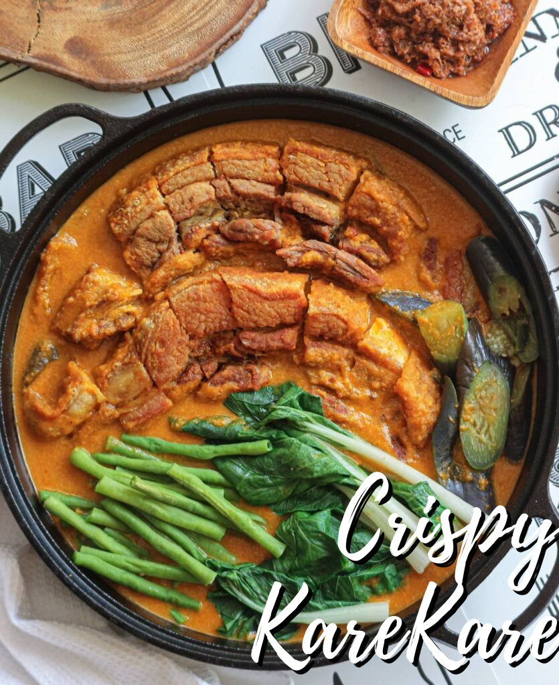
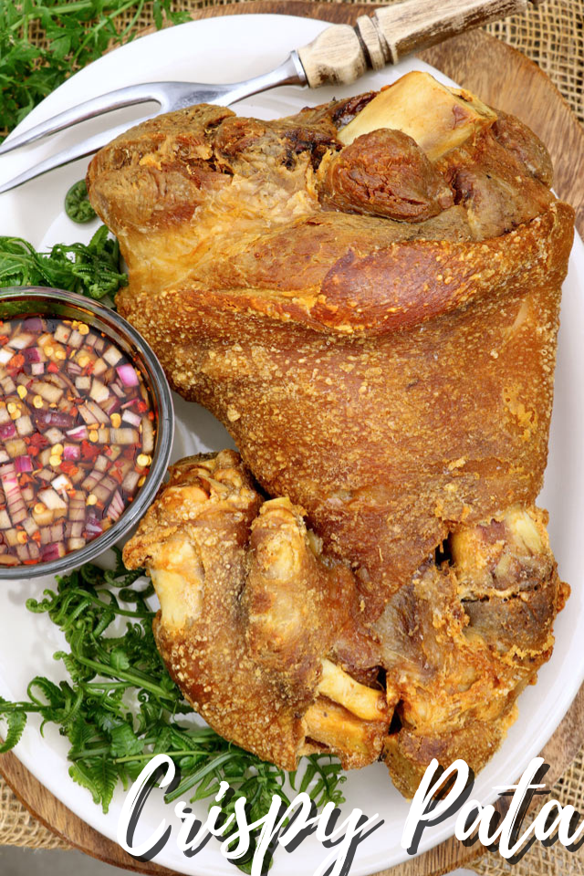
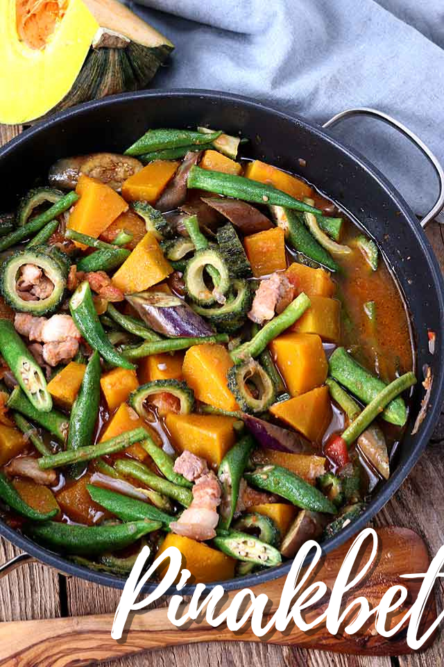

Filipino food is simple to cook and always a pleasure to serve and eat. The blend of flavor and texture makes them stand out.
Also, the warmth extended to family and friends motivates Filipinos to 'cook with love. '
The typical Filipino meal is composed of vegetables, seafood, dairy, meat, and rice.